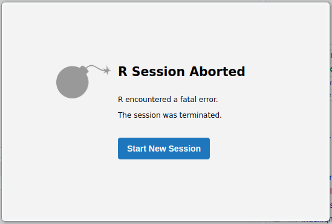
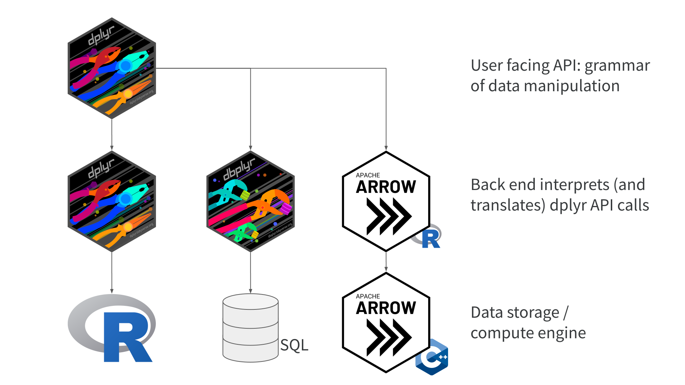
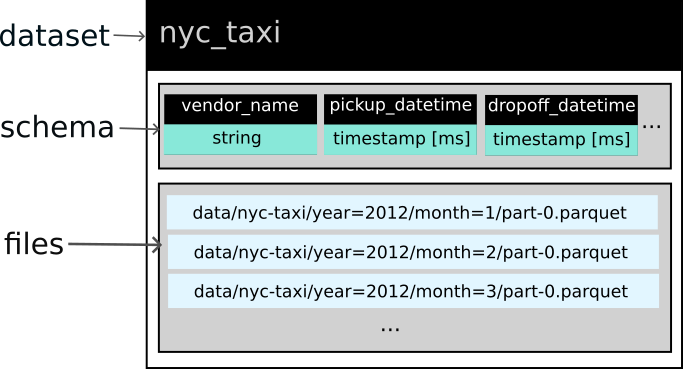
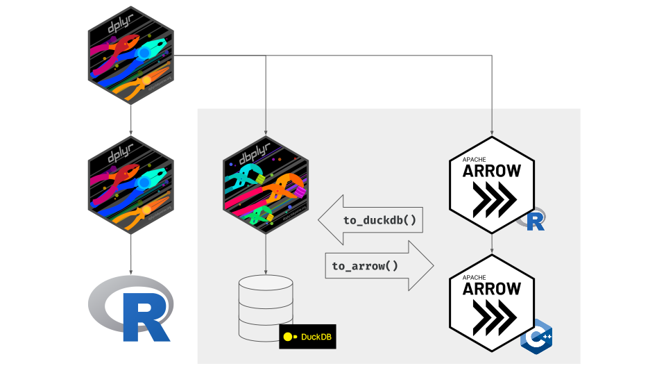

FileSystemDataset with 120 Parquet files
vendor_name: string
pickup_datetime: timestamp[ms]
dropoff_datetime: timestamp[ms]
passenger_count: int64
trip_distance: double
pickup_longitude: double
pickup_latitude: double
rate_code: string
store_and_fwd: string
dropoff_longitude: double
dropoff_latitude: double
payment_type: string
fare_amount: double
extra: double
mta_tax: double
tip_amount: double
tolls_amount: double
total_amount: double
improvement_surcharge: double
congestion_surcharge: double
pickup_location_id: int64
dropoff_location_id: int64
year: int32
month: int32Data Manipulation—Part 1
Goals
Avoiding these! But…don’t worry!
dplyr API in arrow
An Arrow Dataset
Arrow Datasets
Constructing queries
arrow dplyr queries
FileSystemDataset (query)
year: int32
all_trips: int64
shared_trips: uint64
pct_shared: double (multiply_checked(divide(cast(shared_trips, {to_type=double, allow_int_overflow=false, allow_time_truncate=false, allow_time_overflow=false, allow_decimal_truncate=false, allow_float_truncate=false, allow_invalid_utf8=false}), cast(all_trips, {to_type=double, allow_int_overflow=false, allow_time_truncate=false, allow_time_overflow=false, allow_decimal_truncate=false, allow_float_truncate=false, allow_invalid_utf8=false})), 100))
See $.data for the source Arrow objectarrow dplyr queries
- query has been constructed but not evaluated
- nothing has been pulled into memory
To collect() or to compute()?
compute()evaluates the query, in-memory output stays in Arrowcollect()evaluates the query, in-memory output returns to R
compute()
collect()
# A tibble: 10 × 4
year all_trips shared_trips pct_shared
<int> <int> <int> <dbl>
1 2012 178544324 53313752 29.9
2 2013 173179759 51215013 29.6
3 2014 165114361 48816505 29.6
4 2015 146112989 43081091 29.5
5 2016 131165043 38163870 29.1
6 2017 113495512 32296166 28.5
7 2018 102797401 28796633 28.0
8 2019 84393604 23515989 27.9
9 2020 24647055 5837960 23.7
10 2021 30902618 7221844 23.4Calling nrow() to see how much data
Calling nrow() doesn’t work with intermediate step
Use compute() to execute intermediate steps
Your Turn
Use the function nrow() to work out the answers to these questions:
How many taxi fares in the dataset had a total amount greater than $100?
How many distinct pickup locations (distinct combinations of the
pickup_latitudeandpickup_longitudecolumns) are in the dataset since 2016?
Previewing output for large queries
How much were fares in GBP (£)?
How many rows?
Use head(), select(), filter(), and collect() to preview results
Use across() to transform data in multiple columns
FileSystemDataset (query)
vendor_name: string
pickup_datetime: timestamp[ms]
dropoff_datetime: timestamp[ms]
passenger_count: int64
trip_distance: double
pickup_longitude: double
pickup_latitude: double
rate_code: string
store_and_fwd: string
dropoff_longitude: double
dropoff_latitude: double
payment_type: string
fare_amount: double
extra: double
mta_tax: double
tip_amount: double
tolls_amount: double
total_amount: double
improvement_surcharge: double
congestion_surcharge: double
pickup_location_id: int64
dropoff_location_id: int64
year: int32
month: int32
fare_amount_pounds: double (multiply_checked(fare_amount, 0.79))
tip_amount_pounds: double (multiply_checked(tip_amount, 0.79))
tolls_amount_pounds: double (multiply_checked(tolls_amount, 0.79))
total_amount_pounds: double (multiply_checked(total_amount, 0.79))
See $.data for the source Arrow objectUse across() to transform data in multiple columns
# A tibble: 6 × 8
fare_amount tip_amount tolls_amount total_amount fare_amount_pounds
<dbl> <dbl> <dbl> <dbl> <dbl>
1 6.1 2 0 8.6 4.82
2 5.3 0 0 5.8 4.19
3 9.7 2 0 12.2 7.66
4 8.1 0 0 8.6 6.40
5 5.7 2 0 8.2 4.50
6 24.5 6.37 0 31.9 19.4
# ℹ 3 more variables: tip_amount_pounds <dbl>, tolls_amount_pounds <dbl>,
# total_amount_pounds <dbl>Summary
- Use
nrow()to work out how many rows of data your analyses will return - Use
compute()when you need to execute intermediate steps - Use
collect()to pull all of the data into your R session - Use
head(),select(),filter(), andcollect()to preview results - Use
across()to manipulate data in multiple columns at once
dplyr verbs API in arrow - alternatives
Example - slice()
First three trips in the dataset in 2021 where distance > 100 miles
Head to the docs!
or view them at https://arrow.apache.org/docs/r/reference/acero.html
A different function
Or call collect() first
tidyr functions - pivot
duckdb
tidyr functions - pivot with duckdb!
library(duckdb)
nyc_taxi |>
group_by(vendor_name) |>
summarise(max_fare = max(fare_amount)) |>
to_duckdb() |> # send data to duckdb
pivot_longer(!vendor_name, names_to = "metric") |>
to_arrow() |> # return data back to arrow
collect()# A tibble: 3 × 3
vendor_name metric value
<chr> <chr> <dbl>
1 CMT max_fare 998310.
2 VTS max_fare 10000.
3 <NA> max_fare 3555.Requires arrow 13.0.0
This code requires arrow 13.0.0 or above to run, due to a bugfix in this version
Using functions inside verbs
Using functions inside verbs
Morning vs afternoon with namespacing
Morning vs afternoon - without namespacing
What if a function isn’t implemented?
Head to the docs again to see what’s implemented!
or view them at https://arrow.apache.org/docs/r/reference/acero.html
Option 1 - find a workaround!
nyc_taxi |>
mutate(vendor_name = ifelse(vendor_name == "CMT", NA, vendor_name)) |>
head() |>
collect()# A tibble: 6 × 24
vendor_name pickup_datetime dropoff_datetime passenger_count
<chr> <dttm> <dttm> <int>
1 <NA> 2012-01-20 04:32:03 2012-01-20 04:37:47 1
2 <NA> 2012-01-20 04:33:16 2012-01-20 04:39:24 2
3 <NA> 2012-01-20 04:32:38 2012-01-20 04:48:12 1
4 <NA> 2012-01-20 04:31:23 2012-01-20 04:43:28 1
5 <NA> 2012-01-20 04:32:38 2012-01-20 04:39:41 1
6 <NA> 2012-01-11 21:44:00 2012-01-11 22:15:00 2
# ℹ 20 more variables: trip_distance <dbl>, pickup_longitude <dbl>,
# pickup_latitude <dbl>, rate_code <chr>, store_and_fwd <chr>,
# dropoff_longitude <dbl>, dropoff_latitude <dbl>, payment_type <chr>,
# fare_amount <dbl>, extra <dbl>, mta_tax <dbl>, tip_amount <dbl>,
# tolls_amount <dbl>, total_amount <dbl>, improvement_surcharge <dbl>,
# congestion_surcharge <dbl>, pickup_location_id <int>,
# dropoff_location_id <int>, year <int>, month <int>Option 2
- In data manipulation part 2!
Your Turn
Use the
dplyr::filter()andstringr::str_ends()functions to return a subset of the data which is a) from September 2020, and b) the value invendor_nameends with the letter “S”.Try to use the
stringrfunctionstr_replace_na()to replace anyNAvalues in thevendor_namecolumn with the string “No vendor” instead. What happens, and why?Bonus question: see if you can find a different way of completing the task in question 2.
Summary
- Working with Arrow Datasets allow you to manipulate data which is larger-than-memory
- You can use many dplyr functions with arrow - run
?`arrow-dplyr`to view the docs - You can pass data to duckdb to use functions implemented in duckdb but not arrow